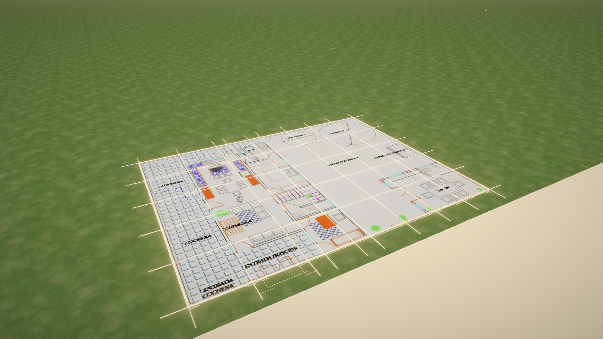
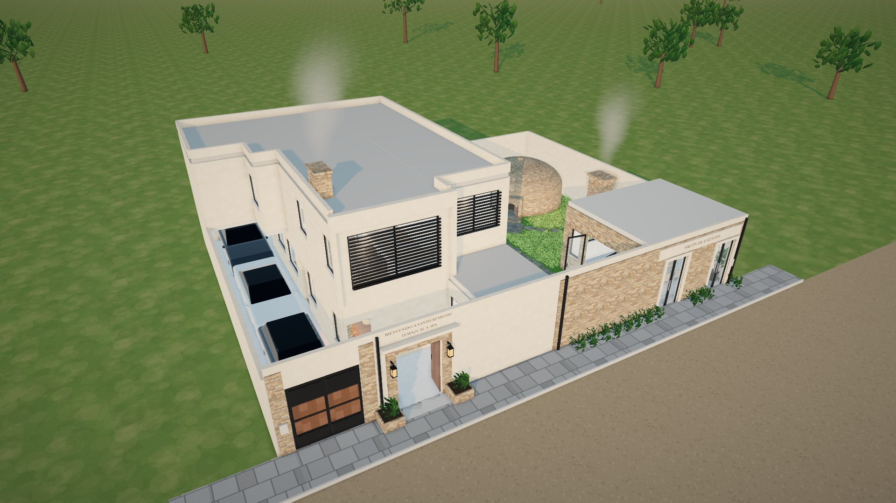

Casa Temazcal · Video en Google Flow
Clip 1 · Del plano a la casa terminada
- Guarda las dos imágenes: clic derecho (o mantén presionado en el celular) sobre cada una → Guardar imagen como…
- En Flow: Fotogramas a video, Veo 3.1 Quality, 16:9, 4 variantes.
- Primer fotograma = imagen 1. Último fotograma = imagen 2.
- Toca Copiar prompt y pégalo completo en Flow. Genera.

1 · Primer fotograma — clip01_inicio.jpg

2 · Último fotograma — clip01_final.jpg
Prompt del clip 1 (en inglés, sin editar)
Cuando tengas las 4 variantes, regresa al chat con Maximo Aurelio y dime cuál elegiste o qué falló. El clip 2 empieza donde termina este.